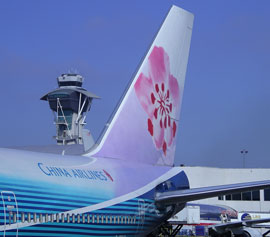
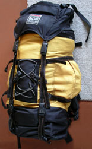

Thailand Trav-E-Logs©
| Airports
sent 17 April 2003 |
 |
| back: Trav-E-Log 2003 | China Airlines continues low fares |
Left Thousand Oaks, California shortly before 5 PM after an all night of preparation, including cutting all the hair off the top of my head, and shortening the beard considerably. Packing decisions included leaving behind a drinking water treatment system consisting of filter, pump and chemicals, and taking my swim fins, which require the use of the upper pack extension to swallow the full 18" length or so. My past experience gives me confidence that a reliable water vendor will always be no more than two or three days away, and I have been know to brush my teeth with the liquid from a packaged drink.
My friend Duncan drives me to my sister's house in Redondo Beach, after a short detour to the Thousand Oaks Library to return a slew of borrowed travel guides. The typical 405-freeway traffic is slow going south of the Santa Monica freeway, but we've grown to expect that. Duncan and I agree we can't understand folks that choose to live lives dealing with this type of traffic congestion on a daily basis.
After saying good by and wishing me luck, Duncan heads to the PCH, while my sister and brother-in-law take me out to a new Indian restaurant close by. The service is pleasant, the food is good; Elaine and Tom are happy this establishment seems to be making a go of it after several unsuccessful predecessors. It certainly is nice having an understanding family member close to the airport. Empty the last bits of stuff I won’t need for the next 5 and a half months from my wallet. Call a taxi for the last 15-minute leg to LAX.
LAX is not the usual hustle and bustle. With BIG BROTHER GEORGE’s foreign policy and the SARS scare, the Bradley terminal seems half-empty. Many facemasks are seen in the fast moving line at the China Airlines counter. I think to myself how ineffective most of these masks are, as many are obviously open at the sides. The average citizen just doesn’t have training in proper use of medical or breathing apparatus. China Airlines grants my request for a window seat near the front of the plane; now to find a phone in a quite corner of the terminal to make an important phone call.
April 15, 2003
The 85%-full flight leaves LAX on time - 1:15 AM. Other airlines should take a lesson from CI. Fast, friendly service, reasonable prices (almost always the lowest during 5 years of checking prices). It's still amazing how fast this airline loads and unloads a 747! Diner is served shortly after becoming airborne, followed by lights out. This works for me, as it is the first I’ve seen of my eyelids since waking up at Baldy lodge Sunday morning. The 15th is a very short day, as the flight crosses the International Date Line four or five hours into the flight. Gives new meaning to the expression "I didn’t get anything done today."
April 16, 2003
No reason to rush off the plane in Taiwan, as the itinerary lists a 3.5-hour layover. All passengers seem to be lining up in order to leave this section of the terminal, but the quietness of the transit lounge is to my liking, so start investigating. Just down the hall, a corner has been set up with Internet stations for laptops. The instructions say you must have an account with this firm, but when asking around, I’m told you can use the space and power plug free of charge. The next hour and a half are spent cleaning out junk from the laptop and starting this Trav-E-Log. At the appropriate time I leave the transit lounge only to find a rudimentary SARS checkpoint. It appears totally ineffective, but does explain the long queue seen earlier.
The connecting flight to Bangkok is uneventful, until arrival at Bangkok’s Don Muang Airport. As the plane lands, a golf course is seen to share the space BETWEEN runways. This has got to make for some interesting stories! Just as my plane (737) clears a ramp, noticed a group of 20 or so golfers cross that same ramp in front of the next aircraft, a 747. Well, guess that’s not as stupid as permitting smoking on an aircraft, and I did that for 15 years.
Aircraft lands on schedule, but it then takes forever to get through the very thorough SARS screening, and passport control. The former consists of signing an affidavit, having medical personal taking the temperature of every single passenger and crew, and then sitting with a different team of medical folks who ask you the same questions again. Noticed signs in about six languages. These folks are serious about quarantine, and if you check the World Health Organization’s tally, you will see that it pays! Bravo for Thailand.
Finally get my luggage, and pass through customs, following instructions to declare my notebook. They tell me it’s no longer necessary to declare such, so make a beeline for the "nothing to declare" exit. Next stop is to buy baht at the airport money exchange, and get some information about visas at the Tourist Information Thailand office. The window is open, but nobody’s home. Must have taken a late lunch, I’m thinking. After 25 minutes, the person shows up, but isn’t able to answer any of my questions. Glad I’m not in a hurry. Time to suit up with my waist sack, backpack, and heavy daysack, and head out, up and over to the train station. The ticket counter is closed, but people are waiting for trains, so I walk around investigating. A travel agent offers that the ticket seller will be back about 10 minutes before the next scheduled train. Sure enough, 20 minutes later, the agent shows up and says the next train will be along in about 25 more minutes. Lesson learned: Just because a train station is convenient to a major airport, the respective schedules don't necessarily compliment one another.
From the train terminus, it’s just a short taxi ride to the section of town where backpackers congregate. The forth place (Green House) is located behind the temple from the noisy Khao San Road, and they have a double for 190 baht a night. No power outlet, and it’s on the third floor, but I take it anyway. I’m exhausted, and haven’t adjusted to the heat and humidity yet. Now it is safe to set the pack down and walk around town for awhile - It’s the end of a three-day holiday for Thailand. Eat a very late lunch, buy a sarong and bus map, and check out Internet sites. So far, none will allow a discount for not using their equipment, but all will allow use of the USB port, so plugging in my card reader will permit transfer of files (and pictures) to computers using Windows XP and Windows 2000 operating systems.
Back at the Green House, I take a traditional Asian bath, and decide it’s time to lay out the sarong and strip. The room is well netted, and I won’t hear the noisy fan overhead.
Bill
| next: First Days |
| back: Trav-E-Log 2003 |